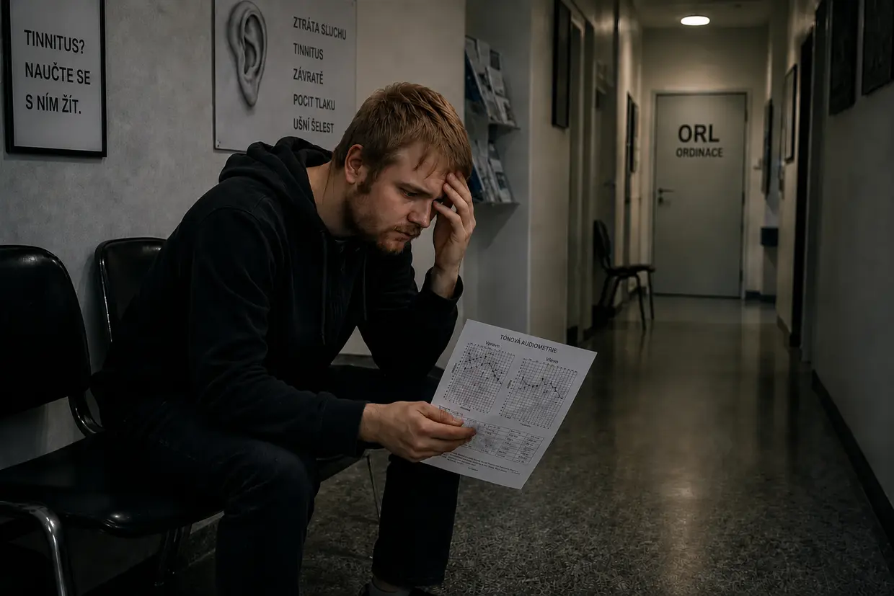
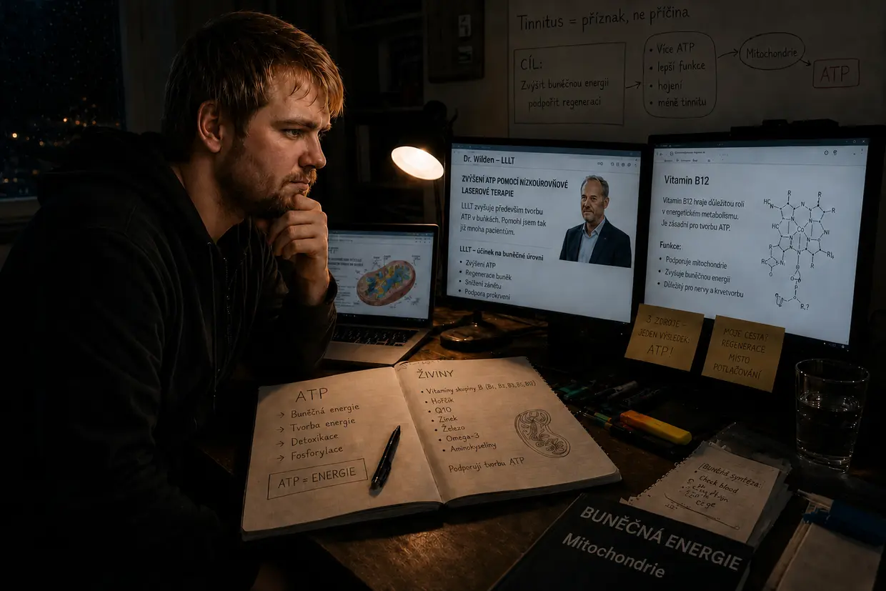

Moje cesta do tinnitusového pekla – 1. část: jízda peklem
Ahoj, jmenuji se Dustin Müller. Jako člověk, kterého tinnitus v minulosti opakovaně zasáhl, jsem cítil obrovskou potřebu založit tento web. Svými dlouholetými rešeršemi, skutečnými biohackingovými protokoly a vlastními zkušenostmi chci ostatním lidem s tinnitem ukázat, jak jsem já osobně dospěl k úplnému vyléčení. Než se ale ponoříme hluboko do mechanismů, musím vyprávět, jak to u mě vůbec začalo. Nebyla to žádná náhodná zdravotní příhoda, ale čelní náraz.
Hledáš krátkou verzi? Tato dlouhá verze zachází do každého detailu – do audiogramů, návštěv ORL i jednotlivých průlomů. Pokud to chceš stručněji, správným místem je krátký příběh.
Podzim 2011: neporazitelné tělo a předchozí zátěž
Je ti 23, máš energie na rozdávání a myslíš si, že tělo zvládne všechno. S tímto nastavením jsem zacházel i se svýma ušima. Miloval jsem hudbu. Roky jsem ji poslouchal ve sluchátkách tak hlasitě, že ji rodiče slyšeli přes zavřené dveře mého pokoje. Systém už byl „rozvařený“, aniž bych o tom věděl.
Všechno začalo kvůli mému bratranci. Protože jsem nikdy pořádně nebyl na diskotéce, měl jsem s ním jít do frankfurtského klubu U60311. Měl jsem z toho nepříjemný pocit, ale přesto jsem souhlasil. Už při sestupu po schodech jsem cítil, jak brutálně fyzické ty basy jsou. Uvnitř jsem si naivně našel údajně nejlepší místo – asi 10 metrů přímo před obrovskými reproduktory, s levým uchem přesně natočeným ke zdroji zvuku. To byla chyba, která shodila první kostku domina.
Ráno potom: zrádný klid
Už když se za námi zavřely dveře, cítil jsem v uších šílený tlak – vlevo mnohem silnější. Všechno znělo tlumeně, jako pod vodou. Bratranec říkal, že je to normální a zase to přejde. Protože jsem byl opilý, padl jsem do postele. Druhý den ráno jsem se při pokusu vstát okamžitě zřítil zpátky do polštáře – rovnovážný systém byl na padrť a silně mě to mechanicky táhlo doleva.
Protože jsem měl naprostou základní důvěru v regenerační schopnosti svého těla, bral jsem to skoro s humorem: Čas to spraví. A vypadalo to tak: Druhý den tah doleva polevil a pocit tlaku téměř zmizel. Vydechl jsem si – myslel jsem, že jsem z toho vyvázl.
3. den: monstrum se probouzí
Třetí den po diskotéce. Probudil jsem se a najednou slyšel zvuk podobný pípání ledničky. Co to sakra je? Přitiskl jsem hlavu ke zdi. Poslouchal u zásuvky. Zkontroloval počítač i budík. Nic. Pak jsem si přitiskl ruce na uši.
Do prdele. Vychází to ze mě. Je to v mojí hlavě.
Několik minut jsem stál v šoku. Co to je? Zůstane to? V levém uchu dunění, šumění, sirény a hlasité pískání. V pravém jsem už tehdy vnímal slabý pískavý tón. Navzdory šoku jsem si myslel: Ono to zase přejde.
Otrávení softwaru (čtrnáctidenní lhůta)
Na internetu jsem během několika minut narazil na odpovědi: náhlá percepční nedoslýchavost a poškození vnitřního ucha. Trvalá ztráta sluchu, často ušní šelesty. A pak věta, při které mi ztuhla krev v žilách: „Musí se to léčit do 14 dnů – jinak celý stav přejde do chronicity a člověku zůstane na celý život.“ Na fóru tinnitus.de jsem četl vlákna lidí, kteří s tím žili už pět let. Pět let? Do prdele. Z fyzického poškození se stala obrovská psychická hrozba.
Zrada v bílém (moje první návštěva ORL)

Jel jsem ke svému otorinolaryngologovi (ORL lékaři), ke kterému jsem chodil už jako dítě. Naděje. Teď přijde vysvobození. Vyprávěl jsem mu o návštěvě diskotéky a příznacích. Už lehce otráveně řekl: „Ano, nevšímejte si toho. Pusťte si trochu hudby, abyste ty tóny překryl.“ Doptal jsem se: „Ale přece se to musí léčit do 14 dnů? A je další vystavování hluku opravdu rozumné?“ Odpověděl: „Nejprve uděláme audiometrii.“ Řekl to a odešel z místnosti. Moje víra se začala drolit.
Hrůza ticha (audiometrie)
Teprve při vstupu do zvukotěsné kabiny jsem si uvědomil, jak vážné moje poškození sluchu skutečně je. V tomto absolutním tichu zmizelo veškeré přirozené maskování – zvuky v levém uchu byly nepředstavitelně hlasité. Vyšetření se skládalo ze tří částí: určit frekvenci a hlasitost tinnitu, změřit celkovou sluchovou schopnost a otestovat kostní vedení přes lebku.
Rozsudek
Lékař mi s nálezem v ruce vysvětlil, že mám sluch trvale poškozený a nedá se s tím nic dělat. V šoku jsem se ptal na šance. Znovu lehce podrážděně odpověděl: „Musíte se s tím naučit žít. Nevšímejte si toho, rozptylujte se, nasaďte si sluchátka.“ Na mou absurdní otázku, jestli smím dál chodit na diskotéky: „Ano, to nezpůsobí žádné problémy.“ Tím se rozloučil.
Přísaha a cesta domů
Cesta domů byla čiré peklo. Tíha jako metrák. V zoufalství mě krátce napadlo: Buď se toho zbavím, nebo už nechci žít. Když jsem ale dorazil domů, bezedný smutek se náhle proměnil ve vzdor. Nemůžu uvěřit, že žádný lékař v Německu neví, co tinnitus je. Zaťal jsem pěsti:
„Buď odejde tinnitus, nebo odejdu já. Nedovolím, aby tahle věc ovládala můj život. Musím se sám podívat, co se dá dělat.“
Divoký západ přístupů k řešení

Začal jsem si informace zjišťovat sám a narazil na zahlcující množství „terapií“:
- Kortizon a ginkgo: Prostředky podporující prokrvení a působící protizánětlivě – pro zotavení sluchu to znělo logicky.
- Čelist a šíje (CMD/krční páteř): Teorie, že zvuky vyvolává svalové napětí. Protože jsem si ale tinnitus jednoznačně způsobil basy na diskotéce, rozezněl se můj detektor nesmyslů.
- TRT a maskování: Překrýt ho jinými tóny. Krátkodobě jsem tím skutečně dokázal tinnitus ztišit – když jsem ale zvuk vypnul, vrátil se agresivnější a hlasitější. (Dnes vím: Každý nový zvuk nutí už tak vyčerpané vláskové buňky pracovat – spotřebovávají poslední ATP, které by ve skutečnosti potřebovaly k opravě.)
- Doplňky stravy: Tehdy jsem se těm lidem smál. Co jsou to za idioty, říkal jsem si – ještě utrácejí peníze za něco, co jsem považoval za úplně zbytečné. Že právě touto cestou – skutečnou buněčnou energií, tvorbou ATP a správnými živinami – svůj tinnitus později rozlousknu, by mě ani ve snu nenapadlo.
Druhá návštěva ORL: fatální rada
Ráno před druhou návštěvou ORL tinnitus náhle výrazně zesílil – i už přítomný slabý pískavý tón v pravém uchu byl teď mnohem hlasitější. (Dnes vím: Další vystavování hluku na radu lékaře – hudbě a v noci bílému šumu – znovu srazilo moje buňky na kolena a zesílilo už přítomný tón v pravém uchu.) Druhý ORL lékař byl přátelský a povzbuzující. Předepsal mi ginkgo a doporučil dostatek spánku a pohybu. Na otázku ohledně sluchátek odpověděl: „Je to dokonce prospěšné, pomůže vám to odvést pozornost.“ (Z dnešního buněčně-biologického pohledu naprosto fatální rada.) Na otázku ohledně tříměsíční hranice pro přechod do chronicity odpověděl jen: „Uvidíme… člověk se také může naučit tinnitus kompenzovat, tedy ho úplně vytěsnit.“ A znovu tu byl ten poloviční dovětek, který vylučoval jakékoli skutečné vyléčení.
Zrádné křeččí kolo
Tak ubíhaly dny a týdny. Přes den mě rozptylovala škola. Večer jsem utíkal do zrádné maskovací smyčky: hudba ve sluchátkách a nepřetržitá kulisa zvuků vodopádu. Krátkodobě jsem tím dokázal stav udělat snesitelným. Biologicky jsem se ale točil v kruhu: Zvukovou kulisou jsem udržoval vyčerpané uši v nepřetržitém stresu. Moje buňky spalovaly poslední ATP na zpracování tohoto umělého šumu, místo aby ho využily k fyzické opravě. Čistý režim přežití.
Druhý kolaps: hyperakuze a vertigo-salto
Jednoho rána se v levém uchu náhle znovu objevil silný pocit tlaku. Snažil jsem se ho ignorovat a jel do školy. Protože jsem pořád věřil radě lékaře, udělal jsem během cesty fatální chybu: Pustil jsem si v autorádiu velmi hlasitě svou oblíbenou píseň. Kdybych tušil, co mě toho dne ve škole čeká, okamžitě bych se otočil. Varovné signály už byly přítomné. Neudělal jsem to: Výuka stála peníze, a tak jsem jel dál. (Tato hlasitá hudba byla úplně poslední kapkou pro moje beze zbytku vyčerpané buňky.)
V první hodině se náhle objevilo silné zkreslení sluchu a bolestivá přecitlivělost na běžné zvuky – hyperakuze. (Dnes vím: „Tlumiče“ mého ucha, vnější vláskové buňky, spotřebovaly poslední ATP.) Během dalších hodin byl tlak v levém uchu stále brutálnější. Pak se to stalo: Celý obraz se mi začal svisle otáčet – jako půl salta uvnitř hlavy. Svět stál vzhůru nohama. Po několika sekundách se zrak vrátil do normálu. Zůstala prudká kolísavá závrať, silný tah doleva a tlumený sluch v levém uchu. (Zpětné hromadění iontů v mém vnitřním uchu bylo tak mohutné, že zaplavilo přilehlý rovnovážný orgán.)
V panice jsem se to snažil vydržet. Jakmile začala přestávka, zmizel jsem. Jízda domů byla kvůli extrémní závrati nezodpovědná – každých pár sekund jsem musel korigovat směr. Chtěl jsem se ale jen dostat do bezpečí. Tento druhý kolaps byl definitivním bodem obratu: Tohle už nemůžu dál jen vysedět.
ORL číslo 3 a 4: pilulky místo odpovědí, lež o fantomovém zvuku a psychická nálepka
Ještě ten den jsem si sehnal akutní termín u třetího ORL lékaře. Audiometrie, čichový test a test „polohové závrati“, který nic nezměnil. (Dnes je mi jasné: Nebyly to uvolněné krystalky, ale endolymfatický hydrops – s tím žádné kývání hlavou nic neudělá.) Jeho kolegyně přihodila diagnózu: „další náhlá percepční nedoslýchavost, do 14 dnů přejde“ – nebo možná ucpané vedlejší nosní dutiny; pouhé hádání podle příznaků. Pak přišla rána: „Víte, mnoho lidí propadne depresi. Pokud potíže zůstanou, ráda vám předepíšu antidepresiva.“ Seděl jsem tam a nevěřil vlastním uším. Můj rovnovážný systém zkolaboval a jejím řešením byla… psychofarmaka? Přísahal jsem si: nikdy.
Čtvrtému ORL – „specialistovi“ – jsem vylíčil celý svůj příběh. Místo aby se zabýval buněčnou úrovní, ledově prohlásil: „Slyšel jste někdy o kognitivně-behaviorální terapii? Váš problém je, že se příliš soustředíte na své sluchové potíže, a tím tinnitus udržujete.“ Oponoval jsem: „Ale ten zvuk přece vznikl fyzicky po návštěvě diskotéky!“ Vůbec nereagoval. Na otázku ohledně kortizonu odpověděl: „To by mělo smysl jen během prvních 14 dnů. U vás musíme vycházet z fantomového zvuku.“ Nakonec mi znovu doporučil TRT s protizvuky – a zarazil mě, když jsem vysvětloval, že můj tinnitus po maskování jen sílí. Systém kapituloval a svalil vinu na mě.
Absolutní dno: izolace a selhání systému
Noční můra vyvrcholila na oslavě mých vlastních narozenin (jeden a půl měsíce po náhlé percepční nedoslýchavosti). Hyperakuze a zkreslení sluchu mě doháněly k šílenství. Můj vlastní tinnitus byl tak hlasitý, že úplně přehlušoval řeč ostatních. Přidal se bizarní jev: Písmena zněla úplně jinak než dřív – „S“ znělo jako „F“ a „T“ jako „D“. Už jsem tu záplavu podnětů nevydržel, ukončil vlastní oslavu a utekl domů. V následujících dnech byla závrať tak extrémní, že jsem chvílemi málem padal – komplex příznaků, který z lékařského hlediska odpovídá Ménièrově chorobě. Byl jsem úplně izolovaný a odříznutý. Opuštěný životem i lékaři, kteří mi jen vtloukali do hlavy, že mi blázní mozek a potřebuji antidepresiva.
První klíčový zážitek: důkaz proti lži o fantomovém zvuku
Zrovna pozdě o víkendu jsem kvůli infekci dostal zánět zvukovodu – nezbylo mi tedy než se dovléct na pohotovost univerzitní kliniky ve Frankfurtu. ORL lékař vzal drobnou odsávačku a postupně mi odsál oba zvukovody. A přesně v tu chvíli přišel absolutně klíčový zážitek: Když v levém uchu řádil pronikavý hluk, zároveň jsem cítil, jak na tento rámus tinnitus právě tam agresivně a výbušně reaguje. Potom v pravém uchu: přesně totéž.
Byl to dokonalý A/B test na vlastním těle. Můj rozum rozmetal tvrzení „specialisty“ ve vzduchu: Psychologický fantomový zvuk nereaguje současně na čistě mechanický hlukový podnět v příslušném zvukovodu! Tato reakce pro mě byla absolutním důkazem: Vadný zdroj stále seděl tam dole v uchu. Buňky při hluku okamžitě křičely o pomoc.
Kortizonová infuze a zázrak s gázovými obvazy
ORL lékař se mimochodem zeptal, jak dlouho je to od náhlé percepční nedoslýchavosti. Dva měsíce. Protože jsem byl ještě pod magickou tříměsíční hranicí, kortizon prý stál za pokus. Okamžitě jsem souhlasil a zůstal přes noc na oddělení. Na nemocničním lůžku jsem dál hledal informace a narazil na vlastní web jednoho pacienta s tinnitem. To, co jsem tam četl, dávalo z buněčně-biologického hlediska smysl: Další hluk tinnitus drasticky zhoršuje. Navíc tam byl odkaz na dr. Wildena a jeho nízkoúrovňovou laserovou terapii, která cíleně podporuje tvorbu ATP v buňkách. Stoprocentně to odpovídalo zkušenosti s odsávačkou.
Po třech dnech mě propustili – kvůli zánětu zvukovodů se silnými gázovými obvazy v obou uších. Už během těchto dnů jsem si všiml, že je tinnitus citelně tišší! Nejdřív jsem myslel, že za to může kortizon. Když jsem si ale na webu dr. Wildena přečetl, jak zásadní je aktivně vyhledávat ticho, uhodilo mě to jako blesk: Obvazy moje uši na celé dny silně izolovaly! Běžný ORL lékař by mi uši nikdy tak důkladně nezavázal. Nechtěně jsem získal důkaz, že absolutní klid něco dělá.

Rána, dynamika a protokol absolutního ticha
O několik dní později přišlo další důležité poznání. Při použití lahvičky s krémem přímo u ucha náhle zazněla prudká rána. Ve zlomku sekundy se můj tinnitus rozeřval – ALE během velmi krátké doby se vrátil na svou „normální“ úroveň. Bylo mi naprosto jasné: Můj tinnitus nebyl ničím „pevným“, ale byl mimořádně dynamický! V reálném čase reagoval na hluk zhoršením – a slábl, když jsem důsledně vyhledával ticho.
Vyvodil jsem z toho nemilosrdné důsledky. Od té chvíle jsem aktivně trávil co nejvíc času v naprostém tichu. Hudba, filmy a setkání s přáteli se z běžné součásti života změnily ve vzácné „odměny“ – a pokud k nim došlo, tak přísně bez sluchátek, velmi tiše a jen na krátkou dobu.
Šest měsíců ticha – a stagnace na 25 %
Tinnitus se OPRAVDU měsíc od měsíce ztišoval. Zpětně vzato byla jeho hlasitost po přibližně osmi měsících asi o čtvrtinu nižší. Toto úplné ticho jsem samozřejmě nedokázal dodržovat na 100 % dokonale – i nezbytné jízdy autem (200 kilometrů tam a zpět) znovu vytáhly tinnitus na vysokou úroveň. V podstatě jsem se celý týden šetřil „zbytečně“.
Pak přišlo něco frustrujícího: Při zlepšení asi o 20–25 % se vyléčení náhle zastavilo. Izolaci jsem dovedl do krajnosti – vyhýbal jsem se rozhovorům, neustále nosil špunty do uší a z pokoje dokonce vyhodil tikající nástěnné hodiny. Nic dalšího se ale nedělo. Nula.
Korekce atlasu, CMD a krční páteř – slepá ulička
Tehdy mě napadlo znovu se do hloubky zabývat čelistí, krční páteří a tinnitem. Narazil jsem na CMD (kraniomandibulární dysfunkci) a u zubaře dostal skusovou dlahu. V ortopedickém centru mi diagnostikovali syndrom krční páteře a předepsali silový trénink (Med X). Obojí jsem železně dodržoval a zároveň pokračoval v tichu. Po dvou měsících přišlo vystřízlivění: Potíže s CMD a krční páteří se zlepšily – na tinnitu se ale nezměnilo ABSOLUTNĚ NIC.
Poslední stéblo: korekce atlasu. Ujel jsem 200 kilometrů k terapeutovi s německým profesním označením „Heilpraktiker“, který mi speciálním přístrojem a hmaty vrátil vychýlený atlas do správné polohy. Ani to po několika týdnech nepřineslo nic. Jediný vedlejší výsledek: Tento „Heilpraktiker“ mi na chronickou gastritidu doporučil slupky psyllia, směs minerálních jílů a probiotika. A skutečně: Zánět žaludeční sliznice, který téměř rok vzdoroval, zmizel. Udělalo to na mě dojem – konvenční medicína selhala, tento „Heilpraktiker“ přinesl výsledek.
Vitamin B12 – nejdůležitější (náhodný) klíčový zážitek
Můj otec tehdy trpěl polyneuropatií. Jeho praktický lékař diagnostikoval výrazný nedostatek vitaminu B12 a předepsal injekce. Když si jednoho večera přímo před mýma očima aplikoval ampuli, krátce nato řekl: Bolest polevila a bylo mu zase tepleji. Taková malá červená ampule způsobila něco tak fyzického?
Začal jsem hledat informace a četl: B12 je TEN vitamin pro nervy. Vegetariáni (a tím jsem byl od 15 let!) a pacienti s chronickou gastritidou (ta moje teprve nedávno odezněla) jsou zvlášť ohrožení. Nechal jsem si u praktického lékaře udělat krevní test: Nedostatek potvrzen, na samém spodním okraji normálního rozmezí. Lékař mi ale injekce odmítl – „stále v normálním rozmezí“. Sklíčeně jsem odešel z ordinace.
Když otec večer potřeboval další injekci B12, sebral jsem odvahu a nechal si jednu také píchnout. Důležité: Výslovně nedoporučuji napodobovat to bez lékařského dohledu. Páni – po několika minutách jsem cítil lepší prokrvení, příjemné teplo a jasnější hlavu. Uvolněně jsem šel spát.
DRUHÝ DEN RÁNO: absolutní zázrak. Několik sekund po probuzení jsem to poznal okamžitě – tinnitus se výrazně ztišil! Ze zlepšení o 25 % najednou na dobrých 40 %. Ležel jsem tam ohromený a na pokraji slz. Během dne se sice znovu zhoršil – ale ne až na původní úroveň. A následující ráno znovu: 40 %.
Na webu dr. Wildena jsem četl, že jeho laser cíleně podporuje tvorbu ATP v buňkách. A B12 je nezbytný právě pro tuto tvorbu ATP. CVAK! Možná drahý laser vůbec nepotřebuji – můžu ATP zvýšit cílenými živinami.
Žlučníková kolika a lecitinový zázrak (můj tehdejší myelinový model)
Zatímco jsem čekal na vysokodávkové multivitaminové přípravky z USA, zasáhla mě další katastrofa: žlučníková kolika způsobená žlučovými kameny. Na noční pohotovosti mi lékařka nabídla jen operaci – vyříznutí žlučníku. Odmítl jsem a odešel domů na vlastní riziko.
Znovu rešerše na internetu: Jeden člověk popisoval, že mu několikaměsíční užívání lecitinového granulátu zcela rozpustilo žlučové kameny. Obstaral jsem si ho hned následující den, užil 30 g a skutečně cítil, jak tlak v pravém podžebří polevuje. Důležité: Při žlučových kamenech vždy vyhledej lékařskou pomoc – tohle je moje zcela osobní zkušenost z akutní situace, nikoli rada k léčbě pro ostatní.
Skutečný vrchol ale přišel o tři dny později: Po injekci B12 a lecitinovém granulátu se znovu stal zázrak. Následující den: zlepšení o 60–65 % oproti výchozímu stavu! Po měsících stagnace. Začal jsem hledat informace a tehdy si vytvořil tento model: Lecitin je hlavním stavebním materiálem myelinové vrstvy (izolace nervů). Právě tato izolace se má podle výzkumu při tinnitu způsobeném hlukem poškozovat: „Podobně jako když se zničí plastový obal tenkého elektrického kabelu.“ A B12 měl být TÍM nejdůležitějším vitaminem pro regeneraci myelinové pochvy. No sakra – takže nepotřebuji jen ATP, ale i STAVEBNÍ MATERIÁLY! Dnes tento mechanismus vnímám otevřeněji: Účast sluchového nervu nebo myelinu stále považuji za možnou, u sebe ji ale nedokážu spolehlivě doložit. Možná existuje i nepřímá cesta: Cholin z lecitinu by mohl sloužit jako stavební složka acetylcholinu a přes něj podporovat parasympatikus, hluboký spánek a regeneraci – anebo lecitin urychlil opravu buněk několika cestami současně. Možná se spojilo obojí.
Průlom na 80 procent (obchvat komplexem vitaminů B)
S lecitinem, multivitaminovým přípravkem a injekcemi B12 postupovalo vyléčení dál – tinnitus se ale zastavil na zlepšení přibližně o 70 %. Moje podezření: Ostatní vitaminy skupiny B se nevstřebávaly dostatečně. Obstaral jsem si B1 a B2 v ampulích a B3, B5 a B8 ve vysokodávkových tabletách. A ANO, ANO, ANO: Týden po týdnu další ztišení! V 16.–17. měsíci po diskotéce zbývalo z tinnitu skutečně už jen 20 % (tedy zlepšení o 80 %). Pak ale znovu: stagnace.
Definitivní vyléčení: „Carpet Bombing“ buněk
Hledal jsem informace jako posedlý a tehdy dospěl k závěru: Přemýšlet jen o B12 a lecitinu bylo příliš omezené. Pro mnou předpokládanou opravu myelinu a další buněčné stavební procesy potřebovalo tělo celou řadu dalších živin – omega-3 (DHA/EPA), aminokyseliny, vitamin C, vitaminy A/D/E/K rozpustné v tucích a minerály. Doslova jsem se tím zasypal: 2× týdně injekce vitaminů skupiny B, 3–4× týdně 30 g lecitinu, denně aminokyselinový prášek, 3 g omega-3, vysoké dávky vitaminu C, směs minerálů od Life Extension, hořčík a zinek od NOW Foods, denně sklenici LaVity a navíc multivitaminové tablety od Dr. Ratha. Ortomolekulární „Carpet Bombing“.
Postupné vyhasnutí a konec noční můry (stoprocentní vyléčení)
S kompletním živinovým stackem se dynamika definitivně změnila. Podle mého tehdejšího modelu mělo tělo teď energii ATP A ZÁROVEŇ úplnou paletu stavebních materiálů. V kombinaci s mnišským režimem mohlo konečně pořádně pracovat. Dnes považuji lepší zásobování energií za hlavní páku; živiny zároveň dodávaly důležité kofaktory a stavební materiály a mohly celý proces ještě urychlit. Stejně jako na začátku: Ráno byla buněčná baterie po spánku plně nabitá – nejlepší stav. Večer kvůli únavě během dne tinnitus znovu sílil. Ticho se ale nepřetržitě zařezávalo hlouběji do dne: Nejdřív tón mizel do poledne. Pak až do odpoledne. Večerní propady byly stále slabší a kratší.
A pak přišlo to jedno definitivní ráno – nikdy na ně nezapomenu. Už ve zlomku sekundy po probuzení jsem cítil: V hlavě je to jiné. S bušícím srdcem – vzrušený jako dítě o Vánocích – jsem si zatlačil špunty hluboko do uší. Poslouchal jsem… a nebylo tam vůbec NIC.
Stmívač byl definitivně na nule. Ráno, v poledne, večer – už nic. Jen přirozené, pokojné ticho, které jsem téměř dva roky nepoznal. Tinnitus byl pryč. Úplně zmizel.
Ten pocit se nedá popsat. Hluboký, hřejivý pocit konečné úlevy – a absolutního zadostiučinění. Vyhrál jsem: Nevzdal jsem se, zvítězil nad lékaři s jejich „naučte se s tím žít“ a nakonec ani nepotřeboval drahý laser. Moje tělo se opravilo samo – výsledek byl skutečný: Tinnitus úplně zmizel. Tehdy jsem si mechanismus vysvětloval takto: Myelinová vrstva se obnovila, aktinová kostra vláskových buněk znovu stála, uvolněný kontakt byl opravený a mozek vypnul nouzový zesilovač (Central Gain). Dnes považuji zásobování energií za hlavní páku buněčné regenerace; zaměřuji se přitom především na vláskové buňky, jejich stereocilie a buněčné membrány. Účast myelinu nebo sluchového nervu stále považuji za možnou, u sebe ji ale nedokážu spolehlivě doložit. Biologie zvítězila.
Co jsem tehdy ráno ještě netušil: O mnoho měsíců později mělo moje tělo kvůli jiné fatální řetězové reakci spadnout do nejtěžšího CFS (chronického únavového syndromu). Poznání, že člověk dokáže sám vyléčit i to „nevyléčitelné“, jsem si ale odnesl do dalšího pekla.
Příběh zde ještě nekončí. To, co přišlo po prvním vítězství, byla skutečná zkouška odolnosti – a vědomý, šílený důkaz, že můj biologický model opravdu funguje.